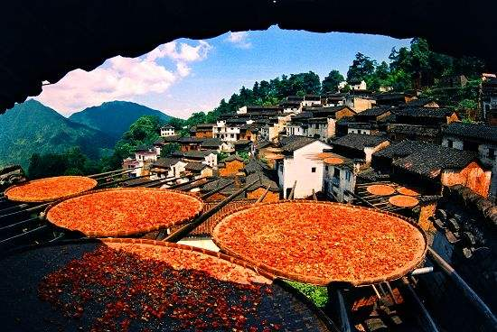
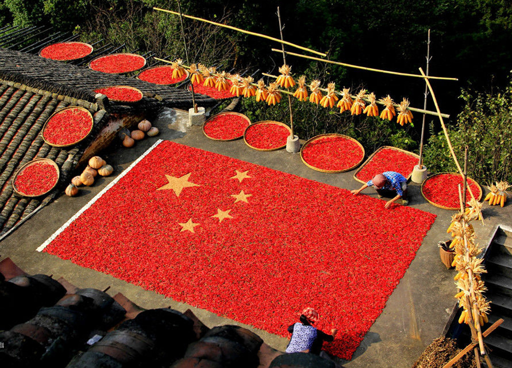

赏秋

晒秋

重阳节是最好的赏秋时期，中国南方还有些山区村落保留了“晒秋”特色。去乡村赏民俗、看晒秋，已成为乡村旅游的一种时尚。“晒秋”是一种典型的农俗现象，具有极强的地域特色。在湖南、广西、安徽、江西等生活在山区的村民，由于地势复杂，村庄平地极少，只好利用房前屋后及自家窗台屋顶架晒、挂晒农作物，久而久之就演变成一种传统农俗现象。这种村民晾晒农作物的特殊生活方式和场景，逐步成了画家、摄影家追逐创造的素材，并塑造出诗意般的“晒秋”称呼。发展至今，不少地方的这种晒秋习俗慢慢淡化，然而在江西婺源的篁岭古村，晒秋已经成了农家喜庆丰收的“盛典”。随着果蔬的成熟，篁岭每年九月九也开始进入晒秋旺季，并举办隆重的晒秋节。篁岭晒秋被文化部评为“最美中国符号”之后，其更演变成乡村旅游提升的“图腾”和名片，每年吸引数十万人去婺源赏秋拍摄。